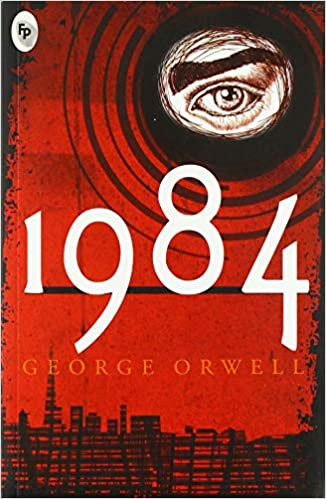
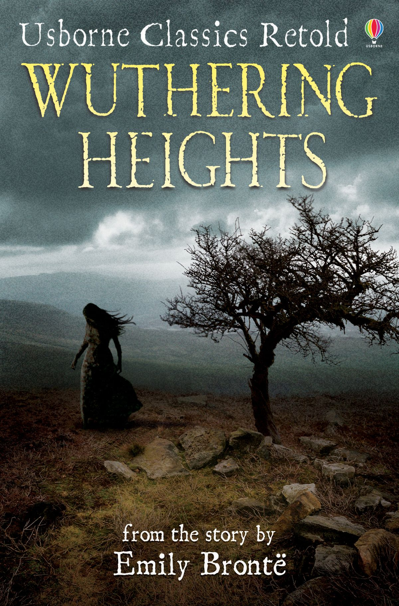

Pride and Prejudice

Jane Austen
Pride and Prejudice is an 1813 novel of manners written by Jane Austen. Though it is mostly called a romantic novel, it is also a satire.
1984
George Orwell
Nineteen Eighty-Four is a dystopian social science fiction novel and cautionary tale written by English writer George Orwell. It was published on 8 June 1949 by Secker & Warburg as Orwell's ninth and final book completed in his lifetime..
Wuthering Heights
Emily Brontë
Wuthering Heights is an 1847 novel by Emily Brontë, initially published under the pseudonym Ellis Bell. It concerns two families of the landed gentry living on the West Yorkshire moors, the Earnshaws and the Lintons, and their turbulent relationships with Earnshaw's adopted son, Heathcliff.
The Great Gatsby

F. Scott Fitzgerald
The Great Gatsby is a 1925 novel by American writer F. Scott Fitzgerald. Set in the Jazz Age on Long Island, near New York City, the novel depicts first-person narrator Nick Carraway's interactions with mysterious millionaire Jay Gatsby and Gatsby's obsession to reunite with his former lover, Daisy Buchanan.